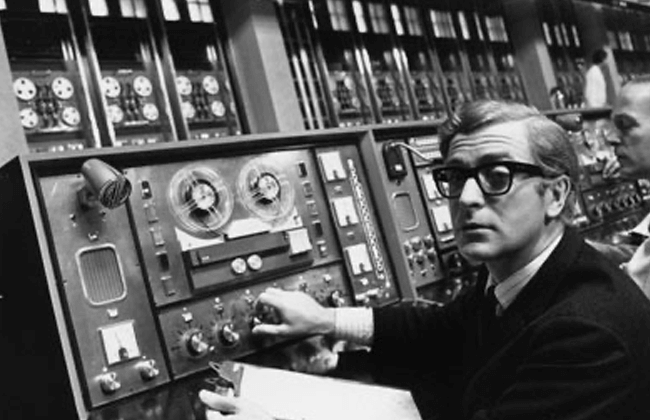
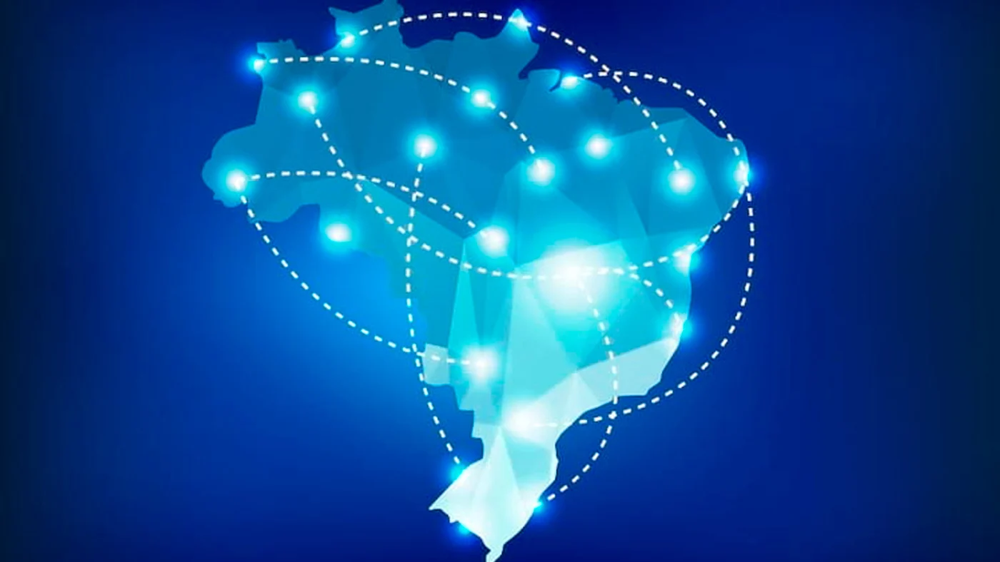

Felipe Bertolini - 1° ano de Informática IFRS Erechim!
A teia global de comunicação!
Criada durante a Guerra Fria, a internet nasceu do projeto norte-americano ARPANET no final dos anos 60. O objetivo era garantir um sistema de comunicação descentralizado e resistente a falhas, conectando centros de pesquisa e universidades com propósitos tanto científicos quanto militares.
O grande salto aconteceu quando as redes deixaram de ser isoladas. A criação de uma "língua universal" para os computadores permitiu que diferentes sistemas conversassem entre si. Isso transformou conexões básicas em uma estrutura gigante e estável, que hoje segura tudo o que fazemos online, unificando o planeta em uma só malha digital.

A troca da conexão discada pela banda larga e o salto para o 5G permitiram que tudo acontecesse em tempo real, do streaming de vídeos às redes sociais na palma da mão.
Nos anos 90, a internet ganhou um "rosto" amigável, deixando de ser um serviço restrito. A criação da World Wide Web permitiu que as informações fossem acessadas visualmente através de páginas e links. Foi essa inovação que transformou códigos complexos em sites fáceis de navegar, abrindo caminho para os primeiros buscadores e serviços online que usamos até hoje.
A popularização da internet no Brasil iniciou-se comercialmente em 1994, consolidando-se nos anos 2000 com o aumento da banda larga e, posteriormente, do acesso móvel. A transição da internet discada para tecnologias rápidas (ADSL, fibra) e a expansão dos smartphones transformaram a rede, que hoje atinge cerca de 90% dos domicílios brasileiros.

© 2026 - Felipe Bertolini | IFRS Erechim
Projeto sobre a Internet - 1° ano de Informática
Cadastre-se para saber mais! Clicando aqui